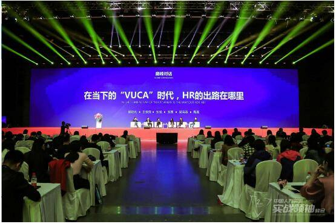

4月20日-4月21日，儒思主办的“中国人力资源实战领袖峰会”在北京国家会议中心盛大召开!其中，人事人作为优秀的人力资源服务商受邀参展本次峰会。
以“实战、链接、启迪、赋能”为主题的中国人力资源实战领袖峰会集结了阿里、华为、壳牌、百度、微软等50位世界500强HR领袖在现场分享实战经验，人事人等30余家人力资源专业公司则提供了最新的优质的行业发展介绍。在历经16小时的分享中，与会者将人力资源的实战思想汇聚成的洪流，是你从未体味过的成长哲学、思维框架、方法论合集!

方正集团总裁，原西门子HRGM谢克海等四人，以“HRD如何站在老板的格局实现自身突破”为主题的巅峰对话拉开了本次会议的序幕。而人事人，作为人力资源行业依靠解决方案、技术积累和业务创新迅速崛起的企业，为本次会议带去了浓墨重彩的一笔。人事人集团凭借着多年来扎实接地气的线下人力资源服务业务积累，由线下薪酬综合解决方案提升到线上SaaS平台，不追求赚快钱的某个业务模块，而是稳定踏实地完善各个业务模块，优化细节，从而建立了综合的围绕薪酬支付和人力金融为主的SaaS平台。在两天的展会上，人事人作为行业新势力，为参会者以及专门前来咨询的HR分享了人力行业既综合又独立的发展大趋势，并且展示了自身独到的业务优势——扎根线下，线上综合，从而能够有效降低企业的用工成本，实力解决薪酬、财税、金融一系列难题。
据了解，人事人，致力于用技术推进人力资本的改变，成为最受欢迎的人力成本优化科技公司。人事人集团创建于2015年，总部位于北京，旗下的人力服务机构最早成立于2008年;截止于2017年底，已在天津、杭州、上海、深圳、宁波、南京等地设有16家分支机构，是国内发展迅速的新兴人力资源科技服务公司。基于技术平台，人事人涉及多条业务产品线：包括社保管理、薪酬管理、福利规划、劳务派遣、岗位外包、商业保险、人力/财税咨询等多个企业级服务板块。
目前，人事人依托110多家成熟的服务机构，通过搭建HRSS服务支撑系统，可在全国375座城市提供专业的人力资源服务，并在北京、天津、上海、广州、杭州、深圳、南京、宁波、石家庄、遵义等地设有16家直营机构，成功服务了10000余家企业!
文章来源：http://money.china.com/stock/industry/201804/25/506202.html